<title>Star map, cards</title>
<meta name="claude:viewport-fit-sides" content="cover">
<link rel="stylesheet" href="https://fonts.googleapis.com/css2?family=Inter:wght@400;500;600&family=Space+Grotesk:wght@500;600&display=swap">
<style>
/* One column of before/after pairs, the game's own dark navy and its pip colours. */
:root {
  --bg: #07090e; --panel: #11161f; --fg: #ecf0f4; --muted: #929ca8; --edge: #242c38;
  --safe: #5ed684; --fair: #60beff; --hard: #ff784c;
  --body: "Inter", system-ui, sans-serif; --head: "Space Grotesk", "Inter", system-ui, sans-serif;
  color-scheme: dark;
}
@media (prefers-color-scheme: light) { :root:not([data-theme="dark"]) { --bg: #f3f5f8; --panel: #ffffff; --fg: #141a22; --muted: #586270; --edge: #d6dce4; --safe: #1f9a4a; --fair: #1f78c4; --hard: #d24a1e; color-scheme: light } }
:root[data-theme="light"] { --bg: #f3f5f8; --panel: #ffffff; --fg: #141a22; --muted: #586270; --edge: #d6dce4; --safe: #1f9a4a; --fair: #1f78c4; --hard: #d24a1e; color-scheme: light }
body { background: var(--bg); color: var(--fg); font: 15px/1.55 var(--body); }
main { max-width: 1240px; margin: 0 auto; padding-block: 32px 64px; padding-left: max(16px, env(safe-area-inset-left, 0px)); padding-right: max(16px, env(safe-area-inset-right, 0px)); display: grid; gap: 36px; }
h1, h2 { font-family: var(--head); font-weight: 600; text-wrap: balance; margin: 0; }
h1 { font-size: 30px; }
h2 { font-size: 20px; }
p { margin: 0; max-width: 70ch; }
.lede { display: grid; gap: 10px; color: var(--muted); }
.lede strong { color: var(--fg); font-weight: 600; }
section { display: grid; gap: 14px; }
.pair { display: grid; grid-template-columns: 1fr 1fr; gap: 14px; }
@media (max-width: 760px) { .pair { grid-template-columns: 1fr; } }
figure { margin: 0; display: grid; gap: 6px; min-width: 0; }
figure img { width: 100%; border-radius: 8px; border: 1px solid var(--edge); display: block; }
figcaption { font-size: 13px; color: var(--muted); }
.tag { font: 600 11px/1 var(--body); letter-spacing: .08em; text-transform: uppercase; }
.tag.b { color: var(--muted); } .tag.a { color: var(--fair); }
ul { margin: 0; padding-left: 20px; display: grid; gap: 6px; max-width: 76ch; }
.safe { color: var(--safe); } .fair { color: var(--fair); } .hard { color: var(--hard); }
.note { font-size: 13px; color: var(--muted); }
</style>
<main>
  <header class="lede">
    <h1>Star map, before and after</h1>
    <p><strong>The owner, 2026-11-27 05:29Z:</strong> "The planet path selection map needs to be improved and planet text needs to be improved."</p>
    <p>Run seed 1, the route bending through each fork, filmed headless at 1920 x 1080 and UI 100% unless marked. The page is a menu, so each step of the run is a still; the GIFs step through planets 2, 4, 6 and 9.</p>
  </header>

  <section>
    <h2>What changed</h2>
    <ul>
      <li>The planets you can fly to stand side by side as <strong>cards</strong> under the map. Before, one pane at the right told one planet at a time and stayed half empty; comparing meant clicking back and forth.</li>
      <li>Each card says the same things in the same order: <span class="safe">Safe</span>, <span class="fair">Fair</span> or <span class="hard">Hard</span>; the slime's size against the <strong>planet you just beat</strong> with a bar and a tick for the last one (it said "0.4 times the first planet's"); hits per bit; the twist; a Hard planet's rare card; bonus goals with their pay ("Win in 60% of the star's time" is now "Win before 6:00"); the world and its map size; which kinds of planet it leads on to; and its points at the foot.</li>
      <li>On the map a planet's <strong>difficulty is its colour, size and pips</strong>: Hard is red-orange (it was the amber of the stars won), larger, with a halo; Safe is small and green. Each is filled with its world's colour.</li>
      <li>A step's planets share one slime, so its name sits <strong>once over the column</strong> instead of under every planet. The home world is named.</li>
      <li>Picking a planet lights the lanes it leads on to. The heat switch moved to the bottom bar, beside Fly.</li>
      <li>The shop's "planet ahead" text is short sentences, one fact each, instead of two lines of semicolons. The twist's line no longer repeats its own name ("Cold snap" / "Cold snap at 0:20: ...").</li>
    </ul>
  </section>

  <section>
    <h2>Through the run</h2>
    <div class="pair">
      <figure><span class="tag b">Before</span></figure>
      <figure><span class="tag a">After</span>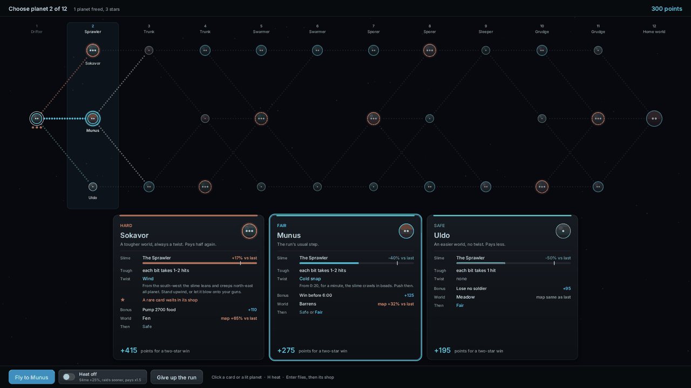</figure>
    </div>
  </section>

  <section>
    <h2>Planet 2: three choices</h2>
    <div class="pair">
      <figure><span class="tag b">Before</span>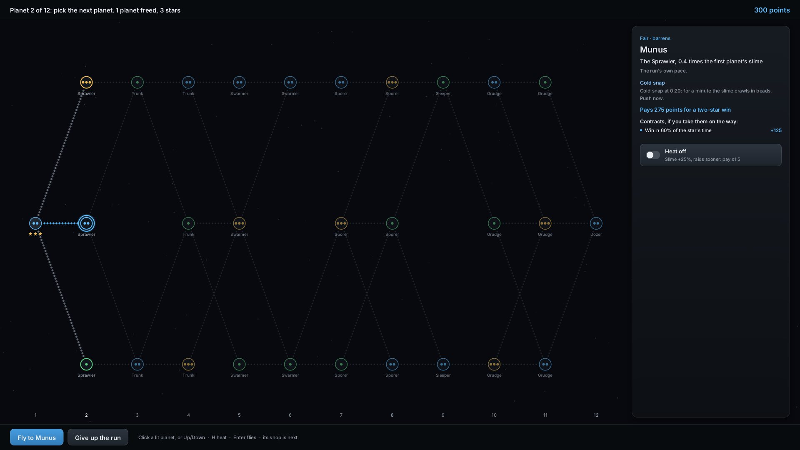<figcaption>Fair picked; Safe and Hard only by clicking.</figcaption></figure>
      <figure><span class="tag a">After</span>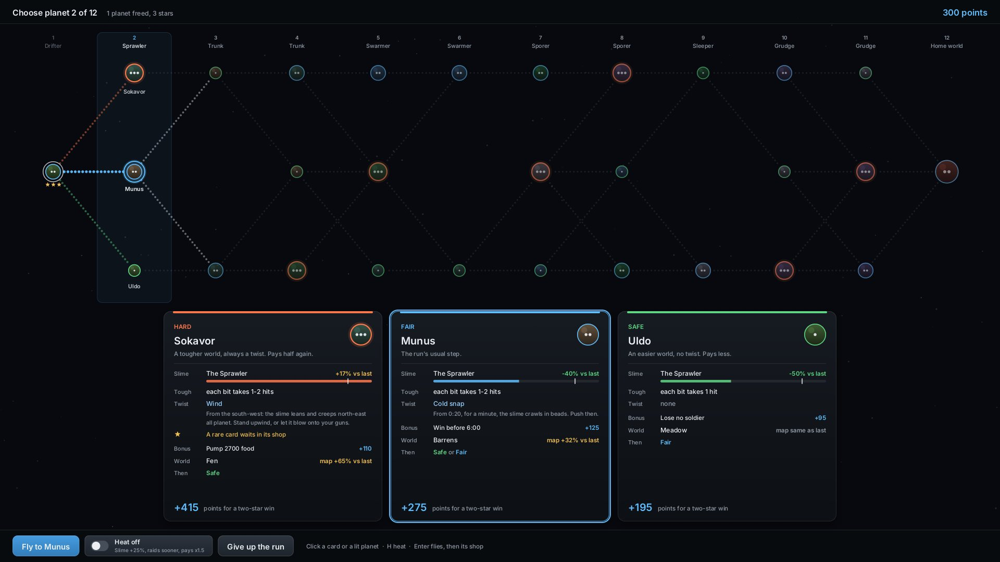<figcaption>Hard +415, Fair +275, Safe +195 side by side; Hard brings Wind and a rare card.</figcaption></figure>
    </div>
  </section>

  <section>
    <h2>Planet 4: Safe or Hard</h2>
    <div class="pair">
      <figure><span class="tag b">Before</span>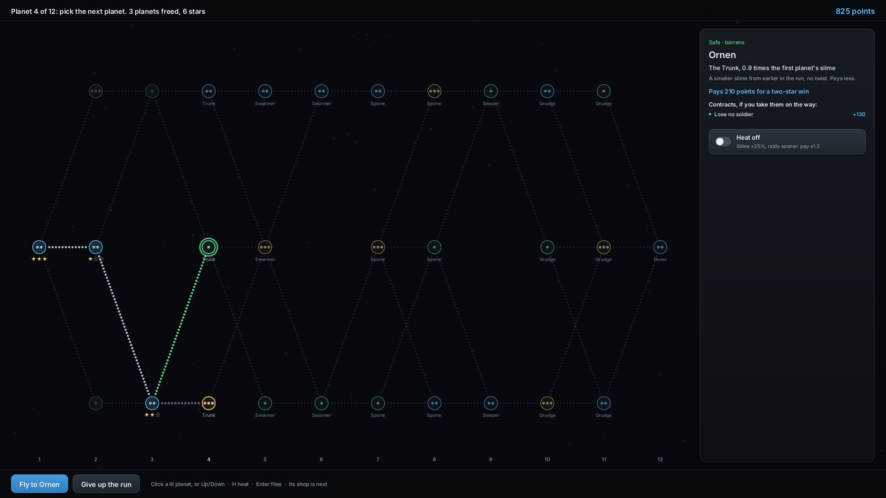</figure>
      <figure><span class="tag a">After</span>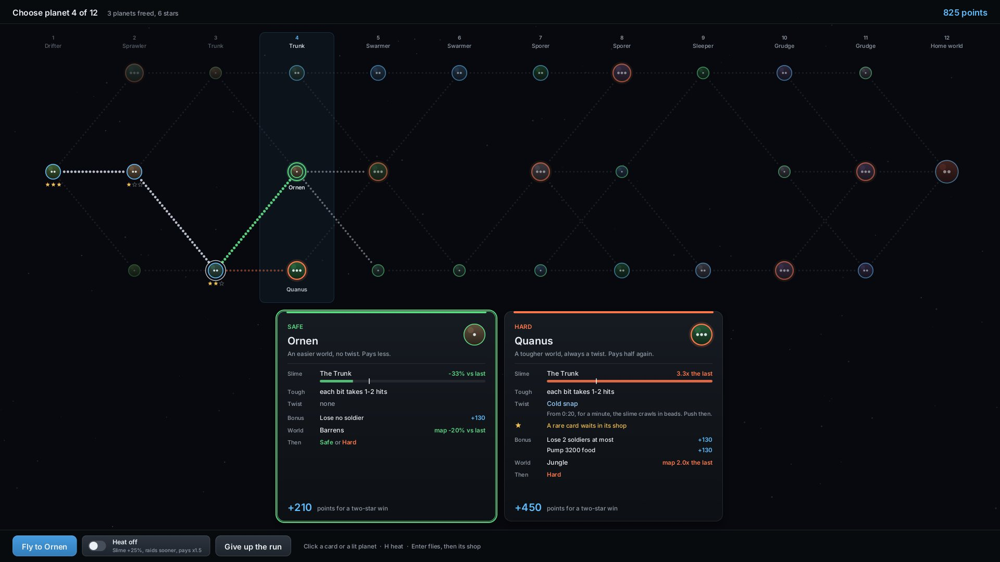<figcaption>Safe: slime 33% smaller than planet 3's. Hard: 3.3 times it, map twice the size, Cold snap.</figcaption></figure>
    </div>
  </section>

  <section>
    <h2>Planets 6 and 9</h2>
    <div class="pair">
      <figure><span class="tag b">Before, 6</span>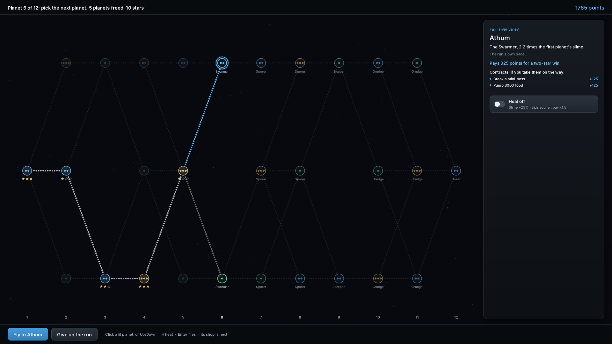</figure>
      <figure><span class="tag a">After, 6</span>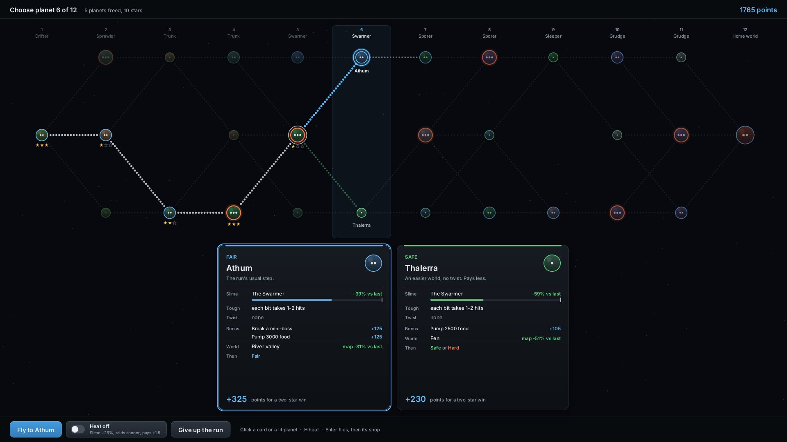</figure>
      <figure><span class="tag b">Before, 9</span>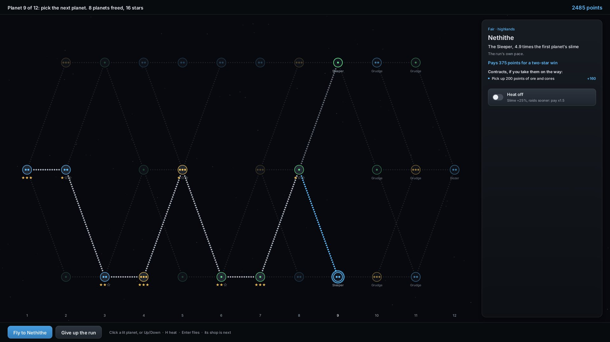</figure>
      <figure><span class="tag a">After, 9</span>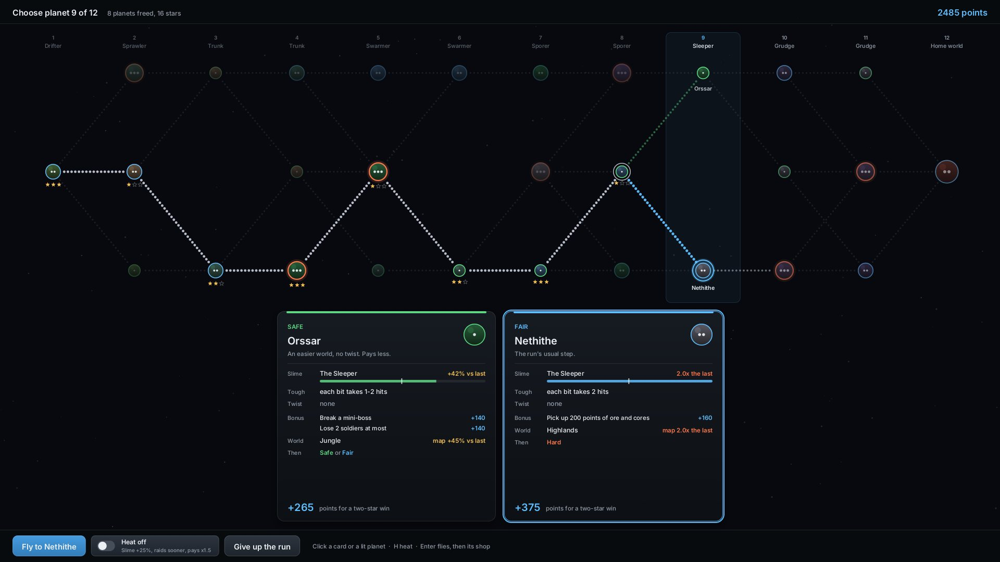</figure>
    </div>
  </section>

  <section>
    <h2>UI size 200%</h2>
    <p class="note">The page never scrolls: at a large UI size the map gets shorter, names under the planets drop, and a card's rows drop from the end (world, then where it leads), the pay kept.</p>
    <div class="pair">
      <figure><span class="tag b">Before</span>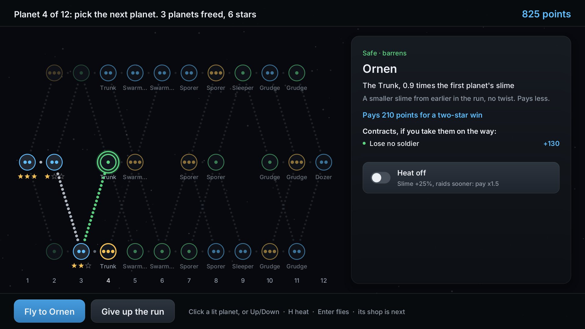</figure>
      <figure><span class="tag a">After</span>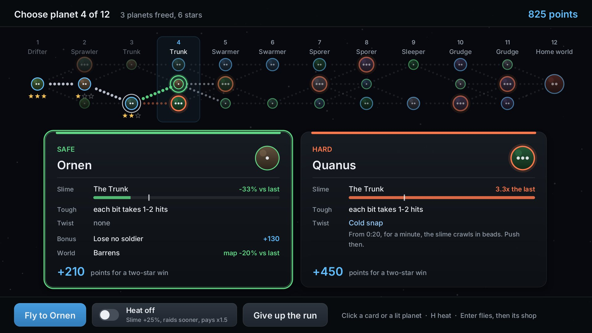</figure>
    </div>
  </section>

  <section>
    <h2>The shop's planet ahead</h2>
    <div class="pair">
      <figure><span class="tag b">Before</span>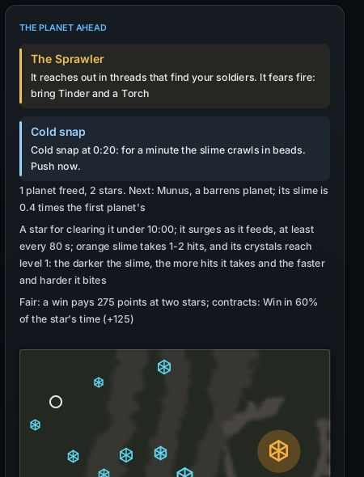</figure>
      <figure><span class="tag a">After</span>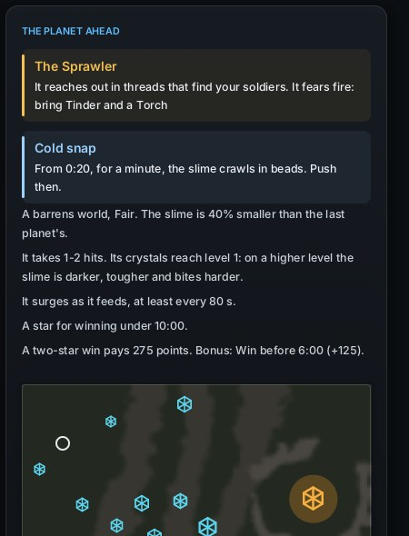</figure>
    </div>
  </section>
</main>
